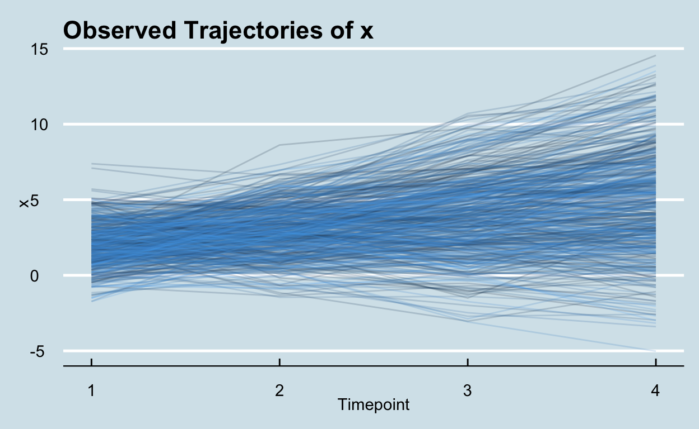
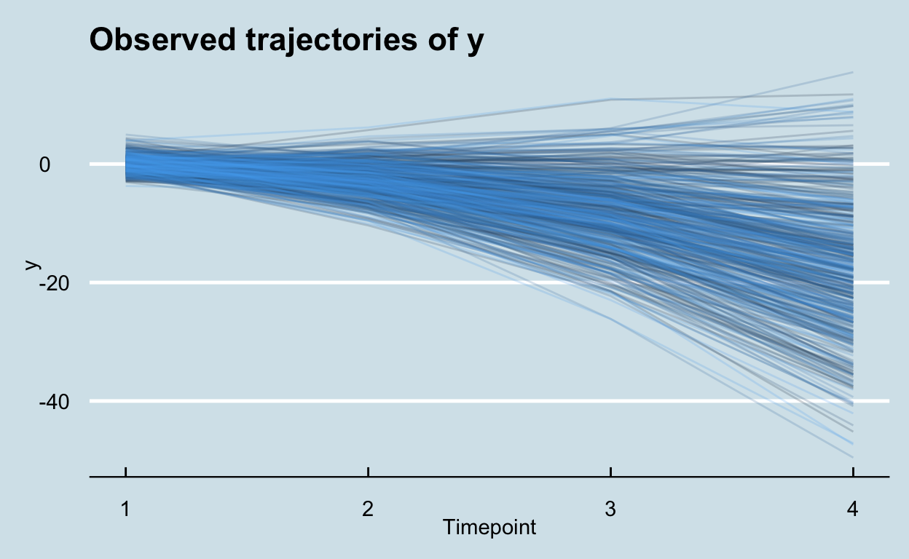
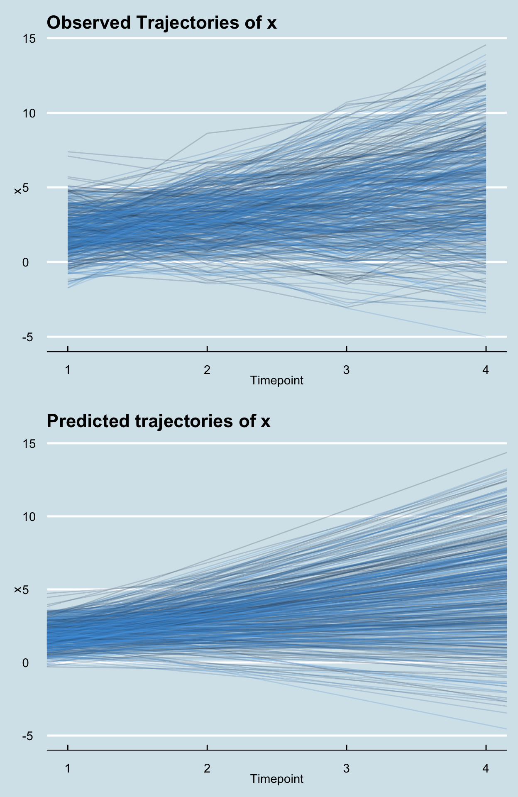
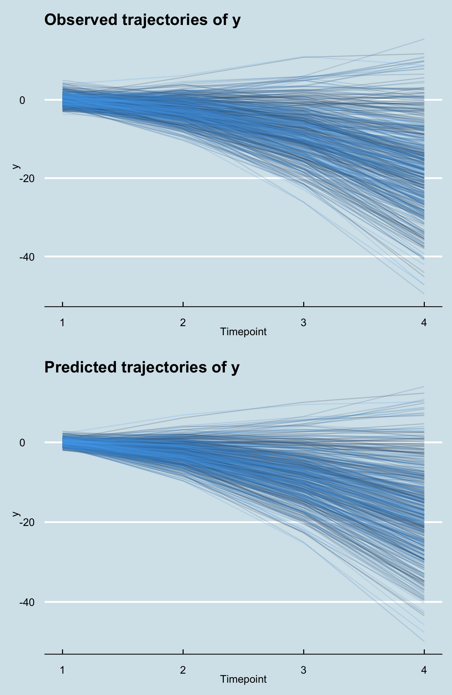

show code
knitr::include_graphics(here::here("images", "tomas-sobek.jpeg"))

photo by Tomas Sobek
Introduction:
During my MS, I had some research questions that were easily answered with structural equation modeling (SEM). I decided to learn {lavaan} because it’s open source and allows simple integration with other R packages.
Because I relied heavily on publicly available tutorials, I wanted to create a {lavaan} tutorial based on a method I used several times: Growth and Parallel Process Models (PPMs).
Most of the tutorials I have found explain only one factor (e.g., the growth curve page on the {lavaan} website) and putting two of these together can be daunting to a new R or {lavaan} user.
Think of this more as a tutorial of the steps needed to take when fitting growth models in {lavaan}, rather than a tutorial solely on either the method or the software.
As a quick terminology aside: I refer to growth models where 2+ factors are modeled “in parallel over time” as parallel process models (PPMs), but they are sometimes referred to differently.
NOTES:
Being a SEM method, this assumes some familiarity with SEM, though I hope to present this in a way that is clear to as many people as possible.
I expect you to understand or to be able to refer to
{lavaan}syntax for basic syntax/interpretation.Consider what I give you the nuts and bolts in how to make this work, and you should refer to other resources for more in depth interpretations.
Load packages
Simulating Data for Demonstration
In order to complete this project, I simulated some data (n = 500). For simplicity, I actually used {lavaan} to make my data, but other software can do this too. I am reserving the code for this until the end, in case you would like to know how I did that, or if you’re curious to see how closely our PPM approximates the structure of the data we made. Specifically, I made two variables across 4 waves (growth modeling assumes time to be equally spaced). I named the variables {x1} ={x}at time 1, {x2} = {x} at time 2, etc. & {y1} = {y} at time 1, etc.
Fit statistics
In SEM, goodness-of-fit testing is not free; you need degrees of freedom. Specifically, you can calculate fit on models where the highest term is {x^(n-2)} where {n} is the number of waves you have. I wanted to show a quadratic fitting process, so I included 4 waves (i.e., x^(4-2) = x^2-order models can be assessed for fit).
It’s good practice to have a set of fit statistcs specified a priori so you aren’t cherry picking good and bad results. Here’s a spread of them I’ve selected, along with ideal levels of fit (commented out).
show code
selected_fit_stats <-
c("chisq.scaled",
"df.scaled", ## must be >0 to test G.O.F.
"pvalue.scaled", ## ideally n.s.
"cfi.scaled", ## ideally ≥ 0.95
"rmsea.scaled", ## ideally ≤ 0.05
"rmsea.pvalue.scaled", ## ideally n.s.
"srmr" ## ideally < 0.08
)
Steps for a PPM:
- Plot your data
- Assess fit of various models for both variables (i.e., no growth, linear growth, quadratic growth, etc.).
- Combine individual ideal models
- Assess fit (& modify syntax, typically, but that is nuanced & beyond our scope)
- Plot the predicted data & compare to step 1
STEP 1. Plot your data
This should give you a guess at what forms probably will fit. I did some work in {tidyr} to move the data around, then plotted in {ggplot2}, where we can see individual trajectories for each construct over time. I set the alpha parameter very low (0.2) so lines are transparent and we can get at density of distribution.
show code
sim_growth_dat$participant_n <-
1:nrow(sim_growth_dat) #add participant number
x_plot <-
pivot_longer(sim_growth_dat,
cols = x1:x4,
names_to = 'x',
names_prefix = 'x')
individual_x_trajectories <-
ggplot(x_plot,
aes(x = as.numeric(x),
y = value,
group = participant_n,
color = participant_n)) +
geom_line(alpha = 0.2) +
labs(title = 'Observed Trajectories of x',
x = 'Timepoint',
y = 'x') +
xlim(1,4) +
theme(legend.position = 'none')
individual_x_trajectories

You can see that the {x} variable is probably linearly increasing, but a very “shallow” quadratic model might fit better so we should check if it fits well. If both fit well, we will compare them with likelihood ratio tests (LRTs).
show code
y_plot <-
pivot_longer(sim_growth_dat,
cols = y1:y4,
names_to = 'y',
names_prefix = 'y')
individual_y_trajectories <-
ggplot(y_plot,
aes(x = as.numeric(y),
y = value,
group = participant_n,
color = participant_n)) +
geom_line(alpha = 0.2) +
labs(title = 'Observed trajectories of y',
x = 'Timepoint',
y = 'y') +
xlim(1,4) +
theme(legend.position = 'none')
individual_y_trajectories

It is clear that {y} decreases with time on average, but there is heterogeneity (or variability) in what happens for an individual case. It looks like a either a linear or quadratic model will fit best.
Let’s dive in!
STEP 2. Assess fit of various models
Time to first fit the model to an intercept-only model (i.e., no growth observed).
Next, we’ll look at linear growth (linear + intercept), then quadratic growth (quadratic + linear + intercept). We won’t go higher than that because we cannot assess fit with only 4 waves.
There are lots of nuances here, but I discuss some common choices here.
Function
The growth() call in {lavaan} is an easy way to specify a growth model. By default, it sets means/intercepts of observed variables to 0 and determines mean structure for latent variables.
Estimator
All data used here is continuous, so we’ll stick with maximum likelihood (estimator = ML) estimation, and I prefer to use the “robust” variant (estimator = MLR) whenever possible to account for non-normal data.
Missingness
For simplicity, there is no missingness in this data. If there were, we could do Little’s Test of Missing data and see patterns of missingness. Assuming data was missing (completely) at random and we didn’t have too much missingness, we could use Full-information Maximum Likelihood to impute missing data.
show code
int_x_mod <-
'
iX =~ 1*x1 + 1*x2 + 1*x3 + 1*x4
'
int_x_fit <-
growth(model = int_x_mod,
estimator = 'MLR',
data = sim_growth_dat)
int_x_fit_stats <-
fitmeasures(
int_x_fit,
selected_fit_stats) %>%
data.frame()
round(int_x_fit_stats, 2)
.
chisq.scaled 1192.66
df.scaled 8.00
pvalue.scaled 0.00
cfi.scaled 0.02
rmsea.scaled 0.54
rmsea.pvalue.scaled 0.00
srmr 0.63The no growth model for {x} does not fit well by any measure. So we’ll move on.
show code
int_y_mod <-
'
iY =~ 1*y1 + 1*y2 + 1*y3 + 1*y4
'
int_y_fit <-
growth(model = int_y_mod,
estimator = 'MLR',
data = sim_growth_dat)
int_y_fit_stats <-
fitmeasures(
int_y_fit,
selected_fit_stats) %>%
data.frame()
round(int_y_fit_stats, 2)
.
chisq.scaled 3136.54
df.scaled 8.00
pvalue.scaled 0.00
cfi.scaled 0.00
rmsea.scaled 0.88
rmsea.pvalue.scaled 0.00
srmr 0.98The no growth model for {y} does not fit well by any measure either. Next, we will check how well a linear-only growth model fits for the {x} & {y} variables
show code
linear_x_mod <-
'
iX =~ 1*x1 + 1*x2 + 1*x3 + 1*x4
sX =~ 0*x1 + 1*x2 + 2*x3 + 3*x4
'
linear_x_fit <-
growth(model = linear_x_mod,
estimator = 'MLR',
data = sim_growth_dat)
linear_x_fit_stats <-
fitmeasures(linear_x_fit,
selected_fit_stats) %>%
data.frame()
round(linear_x_fit_stats, 2)
.
chisq.scaled 4.03
df.scaled 5.00
pvalue.scaled 0.54
cfi.scaled 1.00
rmsea.scaled 0.00
rmsea.pvalue.scaled 0.92
srmr 0.02The linear growth model for {x} fits well by all measures. This is what we expected based on the graph of observed data. We should test quadratic models for fit, though.
show code
linear_y_mod <-
'
iY =~ 1*y1 + 1*y2 + 1*y3 + 1*y4
sY =~ 0*y1 + 1*y2 + 2*y3 + 3*y4
'
linear_y_fit <-
growth(model = linear_y_mod,
estimator = 'MLR',
data = sim_growth_dat)
linear_y_fit_stats <-
fitmeasures(
linear_y_fit,
selected_fit_stats) %>%
data.frame()
round(linear_y_fit_stats, 2)
.
chisq.scaled 842.85
df.scaled 5.00
pvalue.scaled 0.00
cfi.scaled 0.61
rmsea.scaled 0.58
rmsea.pvalue.scaled 0.00
srmr 0.55Looks like the linear {y} is inadequate across all measures.
NOTE:
Quadratic terms represent the average rate of change of the slope across waves. This is synonymous with acceleration in other disciplines, though this terminology is not often used and ‘quadratic growth’ is typically preferred in SEM.
show code
quad_x_mod <-
'
iX =~ 1*x1 + 1*x2 + 1*x3 + 1*x4
sX =~ 0*x1 + 1*x2 + 2*x3 + 3*x4
qX =~ 0*x1 + 1*x2 + 4*x3 + 9*x4
'
quad_x_fit <-
growth(model = quad_x_mod,
estimator = 'MLR',
data = sim_growth_dat)
quad_x_fit_stats <-
fitmeasures(quad_x_fit,
selected_fit_stats)
round(quad_x_fit_stats, 2)
chisq.scaled df.scaled pvalue.scaled
0.02 1.00 0.89
cfi.scaled rmsea.scaled rmsea.pvalue.scaled
1.00 0.00 0.94
srmr
0.00 Here we have an interesting issue, as {x} fits fairly well to both a linear & a quadratic model, but we have a Heywood case, specifically the estimated observed variable variance is negative. Let’s inspect
show code
lavInspect(quad_x_fit, "est")$theta
x1 x2 x3 x4
x1 1.171
x2 0.000 0.718
x3 0.000 0.000 1.213
x4 0.000 0.000 0.000 -0.064Our {x4} variable has a negative estimate for the observed variable’s variance. This is a problem, and indicates the model may not represent the data well. There are ways to use parameter constraints to see if the fit is good if we “force” a change to this parameter, but that’s beyond our scope today.
For teaching purposes, we’ll pretend we didn’t have a Heywood case to do the next step.
When you have two well-fitting nested models (in our case linear & quadratic models), we can compare the fit formally with Likelihood Ratio Tests (LRTs). The null hypothesis is essentially that there is no difference in the variance explained by the two models. Parsimony is preferred in a situation where the variance explained is equivalent.
NOTE:
Some will say this test is only valid if the models have n.s. p-values and there are no Heywood cases.
show code
lavTestLRT(linear_x_fit, quad_x_fit)
Scaled Chi-Squared Difference Test (method = "satorra.bentler.2001")
lavaan NOTE:
The "Chisq" column contains standard test statistics, not the
robust test that should be reported per model. A robust difference
test is a function of two standard (not robust) statistics.
Df AIC BIC Chisq Chisq diff Df diff Pr(>Chisq)
quad_x_fit 1 7570.4 7625.2 0.0200
linear_x_fit 5 7566.4 7604.3 4.0675 4.0026 4 0.4056Here, a non-significant p-value tells us that the linear model is preferred here.
Now onto the quadratic {y} model.
show code
quad_y_mod <-
'
iY =~ 1*y1 + 1*y2 + 1*y3 + 1*y4
sY =~ 0*y1 + 1*y2 + 2*y3 + 3*y4
qY =~ 0*y1 + 1*y2 + 4*y3 + 9*y4
'
quad_y_fit <-
growth(
model = quad_y_mod,
estimator = 'MLR',
data = sim_growth_dat)
quad_y_fit_stats <-
fitmeasures(
quad_y_fit,
selected_fit_stats
)
quad_y_fit_stats
chisq.scaled df.scaled pvalue.scaled
0.190 1.000 0.663
cfi.scaled rmsea.scaled rmsea.pvalue.scaled
1.000 0.000 0.813
srmr
0.001 It’s clear that only the {x} linear model was a good one by all fit statistics. We could actually easily see this earlier in Step 1, but it is good that we checked.
When using real—world data this may or may not be the case; I simulated this data specifically to be clean linear and quadratic models for {x} & {y} respectively.
STEP 3. Building the PPM
Now that we are fairly confident in functional forms, let’s model them together.
NOTE:
For simplicity we are not specifying conditional models which make future growth terms conditional upon earlier growth terms. The distinction between the two is subtle and deserves its own conversation later. For now, just assume growth terms are simply correlated, rather than causally linked.
show code
full_model <-
'
## intercept & slope growth terms for X
iX =~ 1*x1 + 1*x2 + 1*x3 + 1*x4
sX =~ 0*x1 + 1*x2 + 2*x3 + 3*x4
## intercept, slope, & quadratic terms for Y
iY =~ 1*y1 + 1*y2 + 1*y3 + 1*y4
sY =~ 0*y1 + 1*y2 + 2*y3 + 3*y4
qY =~ 0*y1 + 1*y2 + 4*y3 + 9*y4
## regress growth terms on predictor
qY + iY + sX + iX ~ predictor
sY ~ a1*predictor
## regress outcome on growth terms
outcome ~ iX + sX + iY + b1*sY + qY
## testing indirect effect
## predictor --> sY --> outcome
predictor_sY_outcome:=a1*b1
'
full_fit <-
growth(
model = full_model,
estimator = 'MLR',
data = sim_growth_dat)
full_fit_stats <-
fitmeasures(
full_fit,
selected_fit_stats)
round(full_fit_stats,2)
chisq.scaled df.scaled pvalue.scaled
28.23 34.00 0.75
cfi.scaled rmsea.scaled rmsea.pvalue.scaled
1.00 0.00 1.00
srmr
0.03 Full Model Fit
We can see that this model fits well across all fit statistics chosen. This model is deemed acceptable and we can now interpret the model results
show code
summary(full_fit)
lavaan 0.6-9 ended normally after 65 iterations
Estimator ML
Optimization method NLMINB
Number of model parameters 29
Number of observations 500
Model Test User Model:
Standard Robust
Test Statistic 28.456 28.233
Degrees of freedom 34 34
P-value (Chi-square) 0.736 0.746
Scaling correction factor 1.008
Yuan-Bentler correction (Mplus variant)
Parameter Estimates:
Standard errors Sandwich
Information bread Observed
Observed information based on Hessian
Latent Variables:
Estimate Std.Err z-value P(>|z|)
iX =~
x1 1.000
x2 1.000
x3 1.000
x4 1.000
sX =~
x1 0.000
x2 1.000
x3 2.000
x4 3.000
iY =~
y1 1.000
y2 1.000
y3 1.000
y4 1.000
sY =~
y1 0.000
y2 1.000
y3 2.000
y4 3.000
qY =~
y1 0.000
y2 1.000
y3 4.000
y4 9.000
Regressions:
Estimate Std.Err z-value P(>|z|)
qY ~
predictor 0.041 0.048 0.850 0.395
iY ~
predictor 0.034 0.060 0.564 0.573
sX ~
predictor 0.008 0.051 0.161 0.872
iX ~
predictor 0.067 0.060 1.119 0.263
sY ~
predictor (a1) 2.022 0.079 25.545 0.000
outcome ~
iX 1.994 0.145 13.755 0.000
sX -0.017 0.146 -0.115 0.908
iY -0.028 0.186 -0.149 0.881
sY (b1) 2.973 0.104 28.596 0.000
qY -0.242 0.161 -1.510 0.131
Intercepts:
Estimate Std.Err z-value P(>|z|)
.x1 0.000
.x2 0.000
.x3 0.000
.x4 0.000
.y1 0.000
.y2 0.000
.y3 0.000
.y4 0.000
.outcome 0.000
.iX 1.976 0.059 33.700 0.000
.sX 0.991 0.051 19.350 0.000
.iY 0.031 0.061 0.508 0.611
.sY -1.153 0.082 -14.019 0.000
.qY -1.548 0.048 -32.151 0.000
Variances:
Estimate Std.Err z-value P(>|z|)
.x1 1.067 0.099 10.777 0.000
.x2 0.885 0.069 12.924 0.000
.x3 0.983 0.104 9.492 0.000
.x4 1.113 0.197 5.646 0.000
.y1 0.961 0.107 8.991 0.000
.y2 0.868 0.083 10.470 0.000
.y3 0.996 0.179 5.557 0.000
.y4 2.467 0.949 2.601 0.009
.outcome 0.814 0.927 0.878 0.380
.iX 1.043 0.100 10.444 0.000
.sX 1.094 0.076 14.393 0.000
.iY 1.040 0.108 9.595 0.000
.sY 1.131 0.125 9.078 0.000
.qY 0.927 0.068 13.684 0.000
Defined Parameters:
Estimate Std.Err z-value P(>|z|)
predctr_sY_tcm 6.011 0.159 37.874 0.000Interpretation
I am going to trust you understand how to read {lavaan} here, so I’m not going to walk through this line by line. The headlines are {iX} & {sY} significantly predict {outcome}, with the latter predicting it to a much larger degree than the former.
This means baseline levels of {x} predict outcome, as does the linear rate of change of {y}, both positively such that higher levels of initial {x} or faster rates of change in {y} lead to higher levels of {outcome}.
In our example, I included a time-invariant covariate {predictor}. Since {predictor} significantly predicted {sY} and {sY} predicted {outcome}, we would want to look for mediation. You may trust the estimate given by simply the product of each coefficient and it’s significance test, but it is better to rely on other methods to test indirect effects.
Bootstrapping
Bootstrapping is a resampling method (with replacement) that is appreciated for building confidence intervals around parameter estimates of indirect effects, at least in part, because they do not make distributional assumptions about the indirect effect. This creates a more reliable test than standard significance tests. A quick Google Scholar search can inform you on this topic more deeply than this post, but I used this to test the indirect effects using 5000 simulated data sets.
show code
final_fit_boot<-
growth(full_fit,
data = sim_growth_dat,
estimator = "ML",
meanstructure = T,
se = "bootstrap",
bootstrap = 100, # ~5000 better
parallel = "multicore")
parameterEstimates(
final_fit_boot,
level = .95,
boot.ci.type = "bca.simple",
stand = T)[61,c(4,5,9,10)]
label est ci.lower ci.upper
61 predictor_sY_outcome 6.011 5.707 6.355Since this is a tutorial, I set our model to only run 100 times for speed, but you’d likely want to set bootstrap = 5000 for better practice.
Furthermore, looking at the 95% confidence intervals, we find the same result as we did regarding the indirect effect as without bootstrapping. These are the results I trust more, especially since we used bca.simple.
Most likely this is what we wanted to do with this model (at least in my field). Assess if a predictor influences growth in a construct, then see if there is an indirect effect (and quanitify its magnitude).
NOTE:
I made it so only the label, unstandardized estimate and confidence intervals showed up with the [61,c(4,5,9,10)] portion of code, but you should not trust the p-values from this parameterEstimates() if you go with anything but the default (i.e., boot.ci.type = norm). This is because the p-value is built assuming a normal distribution; this eliminates some of the benefits of bootstrapping gained by bca.simple and other methods, but gives you a p-value, which matters a lot to some.
Plotting
We can plot the growth of these traits, as well with {ggplot2}, which helps verify you did this correctly. I won’t go into it here, but these plots can be modified with facet wrapping and other grouping/coloring methods to see how different groups have different slopes, for example.
First we extract factor scores & save this as a data frame, then we can plot. For a linear model, this is pretty simple:
show code
plot_dat <-
lavPredict(full_fit) %>%
data.frame()
plot_dat$participant_n <-
1:nrow(plot_dat)
plot_dat$predictor <-
sim_growth_dat$predictor
predicted_x_trajectories <-
ggplot(data=plot_dat) +
scale_x_continuous(
name = "Timepoint",
limits=c(0, 3),
breaks = c(0, 1, 2, 3),
labels = c('1', '2', '3', '4')
) +
scale_y_continuous(
name = "x",
limits=c(-5,15)
)+
geom_abline(
data = plot_dat,
mapping =
aes(slope=sX,
intercept=iX,
color = participant_n),
alpha = 0.2) +
labs(title = 'Predicted trajectories of x') +
theme(legend.position = 'none')
We can compare those to the observed trajectories (top) to the predicted trajectories (bottom) with {gridExtra} to merge our plots.
show code
gridExtra::grid.arrange(
individual_x_trajectories,
predicted_x_trajectories,
ncol = 1)

For a quadratic model, this is more challenging, but here’s some code to do it:
show code
plot_dat <-
lavPredict(full_fit) %>%
data.frame()
plot_dat$participant_n <-
1:nrow(plot_dat)
plot_dat$predictor <-
sim_growth_dat$predictor
qY <- plot_dat$qY
sY <- plot_dat$sY
iY <- plot_dat$iY
test <- function(y) {qY*y ^ 2 + sY*y + iY}
plot_dat_2 <-
data.frame(`T1` = test(0),
`T2` = test(1),
`T3` = test(2),
`T4` = test(3),
row.names = 1:nrow(plot_dat))
names(plot_dat) <- c('1', '2', '3', '4')
test0 <- test(0)
test1 <- test(1)
test2 <- test(2)
test3 <- test(3)
Y_df <-
c(test0,
test1,
test2,
test3)
df_long_wave <-
c(rep(1,500),
rep(2, 500),
rep(3, 500),
rep(4, 500)
)
plot_dat_2 <- data.frame(
participant_n =
rep(1:500,4),
Timepoint =
df_long_wave,
y = Y_df)
predicted_y_trajectories <-
plot_dat_2 %>%
ggplot(
aes(x = Timepoint,
y = y,
group = participant_n,
color = participant_n)) +
geom_line(formula = y ~ x + I(x^2),
method = "lm",
se = F,
alpha = 0.2) +
labs(title ='Predicted trajectories of y') +
theme(legend.position = 'none')
Again, can compare those to the observed trajectories (top) to the predicted trajectories (bottom).
show code
gridExtra::grid.arrange(
individual_y_trajectories,
predicted_y_trajectories,
ncol = 1)

Next Steps:
If you were to be working on this, I would work further to make the model more parsimoneous, as well as seeing if alternate modifications would increase model fit. Ways to do this include, but are not limited to, constraining residuals, assessing the role of the predictor on the observed vs. manifest model, making the growth terms conditional upon earlier terms, etc.
Looking at the simulation call
Here is the exact simulation call I did in case anyone is curious. I wanted the data to be interesting, so I made sure to set some things (e.g., variances, latent means/intercepts, relationships between variables, etc.)
show code
growth_mod <-
'
## intercept & slope growth terms for X
iX =~ 1*x1 + 1*x2 + 1*x3 + 1*x4
sX =~ 0*x1 + 1*x2 + 2*x3 + 3*x4
## intercept, slope, & quadratic terms for Y
iY =~ 1*y1 + 1*y2 + 1*y3 + 1*y4
sY =~ 0*y1 + 1*y2 + 2*y3 + 3*y4
qY =~ 0*y1 + 1*y2 + 4*y3 + 9*y4
## set variances
y4 ~~ 2*y4
x4 ~~ 1*x4
## set latent means/intercepts
iX ~ 2*1
sX ~ 1*1
sY ~ -1*1
qY ~ -1.5*1
sY ~ 2*predictor
outcome ~ 2*iX + 3*sY
'
In the data I simulated, Variable {x} is changing linearly over time and variable {y} is changing quadratically, which his what we found.
show code
sim_growth_dat <- simulateData(
model = growth_mod,
model.type = "growth",
seed = 82020,
orthogonal = F,
auto.cov.y = T,
auto.var = T
)